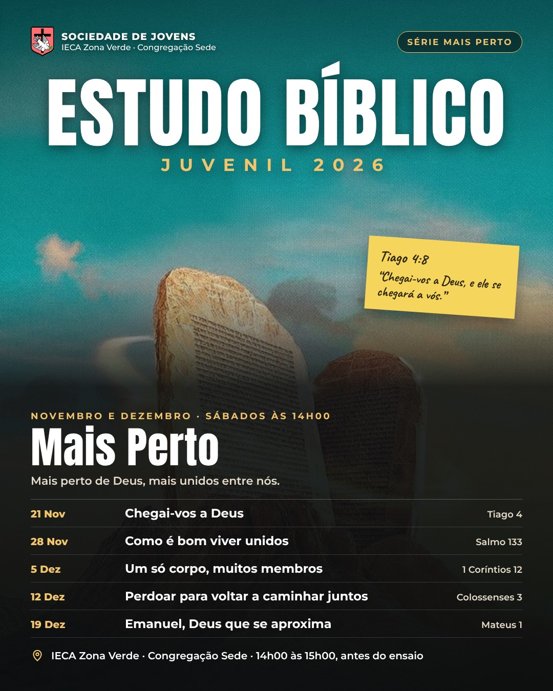
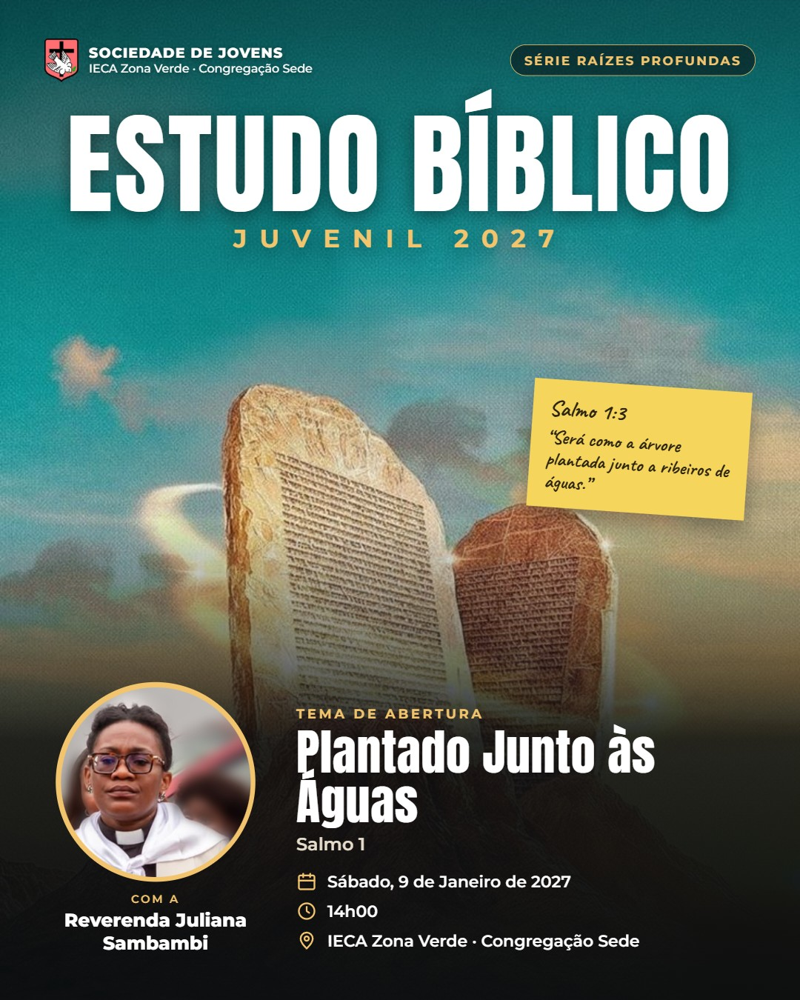

14h00 · Estudo bíblico
Série Mais Perto, até 19 de Dezembro.
15h00 · Ensaio
Logo a seguir ao estudo, no mesmo lugar.
Juntos Somos Juventude
Confraternização ao ar livre. Data e local em breve. Ver o cartaz.
Por onde queres ir?
Desde 2013 na Zona Verde
A Sociedade de Jovens nasceu com a própria IECA na Zona Verde. O que hoje é a Congregação Sede começou como um ponto de pregação, e a juventude esteve lá desde o início.
-
2013
A IECA é implantada na Zona Verde. A congregação ainda era um ponto de pregação, e é nessa altura que se funda a juventude da Zona Verde.
-
Os anos seguintes
O ponto de pregação cresce até ser a Congregação Sede da IECA Zona Verde. A juventude acompanha esse caminho com o coro, os estudos bíblicos, os dramas de Natal, os acampamentos e os convívios.
-
2023
A juventude faz 10 anos e celebra com o seu primeiro acampamento. No mesmo ano é eleita a Direcção do mandato 2023–2026.
-
2024
A 25 de Fevereiro são dedicados a Direcção da juventude da Sede, os conselheiros e as comissões de trabalho, e o dia termina com um lanche de confraternização. A 24 de Março, a juventude do Pastorado abre o ano de actividades com um retiro na Ilha de Luanda. A 28 de Julho, a juventude visita o Miradouro da Lua. De 15 a 17 de Novembro participa no acampamento do 3.º aniversário da Juventude do Pastorado de Zona Verde, com o Pastor Catumbela, então pastor da congregação: três dias de adoração, comunhão e aprendizagem.
-
2025
Concerto solidário para angariar fundos para a ida da juventude ao Jubileu da Juventude da IECA, realizado no Dondo.
-
2026
É eleita a Direcção do mandato 2026–2028, com Dário Quiculo como Director. O lema deste tempo: uma Direcção, uma equipa, uma missão.
O que fazemos durante o mês
A Sociedade de Jovens cuida das crianças, dos adolescentes e dos jovens da congregação, na vida espiritual e em parte da vida social.

Juntos Somos Juventude
Uma confraternização ao ar livre para nos aproximarmos uns dos outros, com o tema "Mais perto de Deus, mais unidos entre nós".
A data, o local e a contribuição de cada um vão ser anunciados aqui e no grupo da juventude.
Estudo bíblico da juventude
Uma série de cada vez, um tema por sábado. Ver a série actual.
Ensaio
Coro e, nesta altura do ano, o drama de Natal.
Aulas das crianças e adolescentes
Durante o culto, com professores escalados.
De Volta à Comunhão
Visitas aos jovens que se afastaram, para ouvir e convidar, sem cobrança nem julgamento.
Chamadas com Propósito
As conversas de sexta à noite no grupo do WhatsApp estão de volta. Ver o cartaz.
Crianças
Aulas durante o culto, acompanhadas por professoras e professores.
Adolescentes
Ensino próprio da idade e actividades próprias, sob a coordenação do Vice-Director.
Jovens
Estudo bíblico, evangelização, acção social, louvor e convívio.
Uma série de cada vez, um tema por sábado
Encontramo-nos aos sábados, das 14h00 às 15h00, antes do ensaio. A Comissão de Evangelismo organiza, recebe os convidados e conduz a conversa em grupos pequenos.

Descarregar cartaz
Descarregar cartaz

Chamadas com Propósito
O programa que a juventude tinha em 2023 está de volta: uma chamada de grupo no WhatsApp, à sexta à noite, para conversar sobre a Palavra e a vida de cada um.
"E sabemos que todas as coisas cooperam para o bem daqueles que amam a Deus, daqueles que são chamados segundo o seu propósito." Romanos 8:28
O tema, a hora e quem vai moderar a primeira chamada vão ser anunciados aqui e no grupo.
Sábado, 14h00
Mais Perto
Sábados das 14h00 às 15h00, na IECA Zona Verde.
O desafio sai depois do encontro
Depois de cada encontro aparece aqui um desafio para viver durante a semana.
A seguir, em preparação
As datas e os temas são definidos pela Comissão de Evangelismo com a Direcção, e anunciados aqui e no grupo da juventude.
As fotos da nossa juventude
Cada actividade tem o seu álbum. Desliza as fotos para o lado, toca numa para a ver maior e descarrega as que quiseres guardar.
Apareces numa foto e preferes que seja retirada? Diz-nos e tiramos.
Quem está a servir no mandato 2026–2028
A Direcção trabalha como uma equipa. Cada estrutura acompanha as comissões ligadas a ela.
As comissões e quem faz parte
Lista provisória de Novembro de 2026. Cada comissão apresenta o seu plano de trabalho ao Corpo Directivo.
Queres servir numa comissão? Fala com a Direcção.
Como contribuir e para onde vai
A Sociedade de Jovens sustenta-se com as ofertas e as quotas dos seus membros. Cada contribuição ajuda a realizar as actividades da juventude e das crianças.
250 Kz
Entregue aos sábados, à Tesouraria.
Em mão, aos sábados, à Tesoureira Cristina Victoria ou à Vice-Tesoureira Carina Rodrigues, que registam e passam recibo.
Ofertas para actividades específicas também são registadas pela Tesouraria.
Prestação de contas
A Tesouraria presta contas todos os trimestres ao Corpo Directivo. Aqui publicamos só os totais aprovados, nunca as contribuições de cada pessoa.
| Trimestre | Receitas | Despesas | Saldo | Estado |
|---|---|---|---|---|
| 1.º trimestre 2027 | — | — | — | Por publicar |
| 2.º trimestre 2027 | — | — | — | Por publicar |
| 3.º trimestre 2027 | — | — | — | Por publicar |
| 4.º trimestre 2027 | — | — | — | Por publicar |
Escreve à Direcção
Contribuições, sugestões, melhorias ou o que está a correr bem. A tua mensagem chega à Direcção. Não precisas de pôr o teu nome.
IECA Zona Verde · Congregação Sede
Benfica, Zona Verde, Rua I
Culto aos domingos às 08h00
WhatsApp: +244 972 661 835